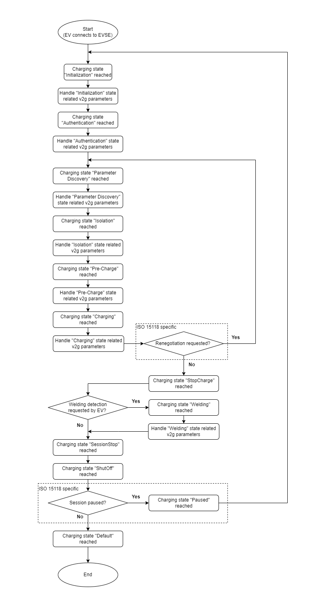

EV Charging Usage Notes — Usage information about the EV Charging solution
The section contains information about how to use the Speedgoat EV Charging solution and the respective Simulink driver blocks.
The following flowchart illustrates a typical charging sequence with the charging states of an ISO/DIN charging session.

The following description summarizes all major steps to provide a charge control algorithm for DC-charging:
Check if the EV is plugged and a CP connection is established (CP State 'B' received over topic TOPIC_CHARGE_CP_STATUS and TOPIC_CHARGE_TCP_STATUS with "connected" ('1' tcp or '2' tcp with tls)
Observe the CP States and the TCP connection status throughout the whole charging session
Use the status topics to indicate the current Charging state
Analyse the subscribed MQTT EV topics and handle the EVSE topics according to the standard (ISO 15118 / DIN 70121)
Initialization State
Handled automatically
During the initialization state, the Base Configuration parameters are set according to the configuration in the Setup block
Authentication State
Handled automatically
Currently, only free charging is supported
Parameter Discovery State
If the charge parameter state has finished on EVSE side, the EVSE Processing parameter of the "PARAMETER" state needs to be set to "Finished" ('0') and the EVSE Statuscode shall be set to "EVSE_Ready" ('1')
If EVSE Processing was set to "Finished" ('0') the connector has to be locked on EV-side
In ISO 15118, an SA-schedule must be sent over topic EVSE SA-Schedule. One schedule is already pre-configured by the charging-stack, but this one should be adapted with valid data. A list entry can be overwritten by using the SA-Schedule inputs of the Simulink block. The pre-configured SA-schedule is using SA-Schedule Tuple ID '1'
Isolation State
If the EVSE is performing the isolation check, the Statuscode shall be set to "EVSE_IsolationMonitoringActive" ('4')
If the cable status is successfully checked, the Isolationstatus should be set to "Valid" ('1') or whatever its result is. The isolation status should be observed and updated throughout the whole Charging state. If the isolation status is "valid" ('1') or "warning" ('2'), the EVSE Statuscode must be set to "EVSE_Ready" ('1')
If the isolation check has finished on EVSE side, the EVSE Processing parameter of the "ISOLATION" state needs to be set to "Finished" ('0')
Pre-Charge State
If the EVSE is ready, the Statuscode shall be set to "Ready" ('1')
The EVSE Present Voltage must be ramped up to the requested EV Target Voltage
The pre charge state is finished by the EV when it considers the voltage to be successfully adjusted
Charging State
The EVSE shall follow the requested EV target voltage and target current under the conditions of the handled maximum and minimum limits
The topic EV Ready to Charge State indicates the current charge progress of the EV. If it is set to "Start" ('0') or "Stop" ('1'), the EV requests to start or stop the energy flow. If it is set to "Renegotiate" ('2'), the EV requests the renegotiation process. (Only relevant for ISO 15118)
Welding State
At the end of a charging session the EV can perform a welding detection to ensure that the contactors are not welded. It is a sequence of opening and closing of the contactors and simultaneous observing the voltage
If the EVSE is ready, the Statuscode shall be set to "Ready" ('1')
During the Welding state, it is advised to drop the actual EVSE voltage to zero
The EV decides when it is ready to leave the state
Initiate a shutdown of the power electronics, if the EV indicates to stop charging or for EVSE emergency reasons
The charging session is terminated by receiving the status topic TCP with "disconnected" ('0') and status topic CP with state 'A'